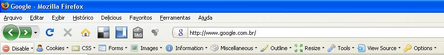
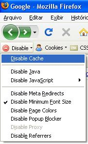
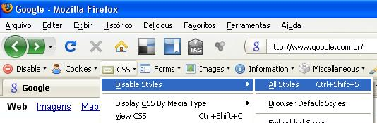
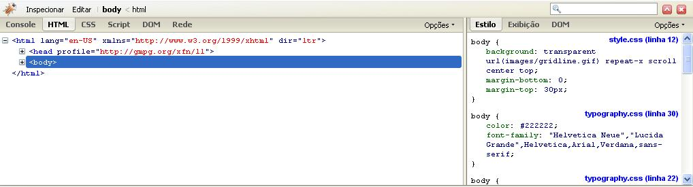
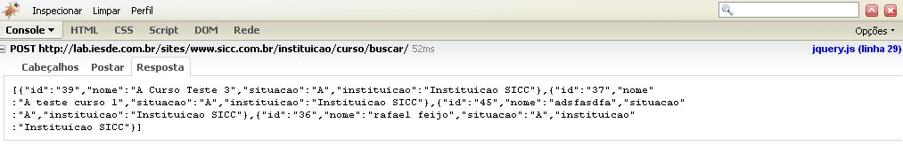
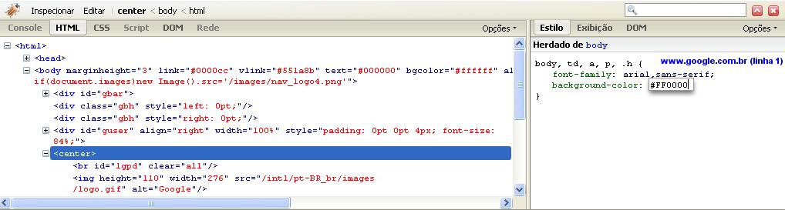
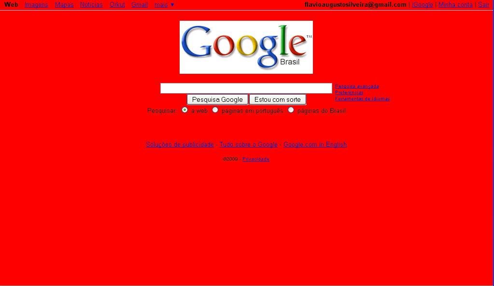
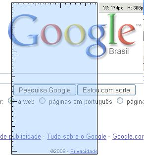
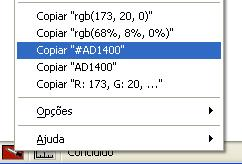

Firefox Ajudando No Seu Dia De Trabalho
Fui à casa do meu amigo Jean há alguns dias, ajudar com algumas soluções de programação para o seu site. E no vai e vem da programação comecei a apresentar e adicionar umas ferramentas no firefox dele. Ele ficou completamente maravilhado com a coisa toda, e isso me deixou pensando. Porra! A galera que está começando ou quem já programa e não conheçe, precisa saber dessas ferramentas. ****
Muitas vezes algumas coisas por serem tão naturais para nós, faz parecer que todo mundo conhece aquilo.
A maioria de programadores e desenvolvedores gostam de Firefox, fato!
Talvez em primeiro lugar para ir de encontro com a Microsoft. Segundo porque o Firefox geralmente obedece o que está no seu código, e terceiro, porque ele ajuda muito quando você tem umas ferramentas bacanas adicionadas a ele.
Para adionar complementos no seu firefox duas opções:
– Você pode ir no Menu: Ferramentas >> Complementos e procurar por ele na aba Adicionar. *
– Ou ir direto no site de plugins da Mozilla, e baixá-los para sua máquina. Para posteriormente instalar as extensões que você baixou, vá no Menu: Arquivo>>Abrir Arquivo*.
Eis alguns complemetos que uso:
WEB DEVELOPER
A web developer é uma barra de ferramentas com várias coisas que vão te auxiliar. Logo que você reinicia o firefox após instalar a extensão, ela vem aparecendo abaixo da barra de navegação.  Existem muitas coisa legais na web developer onde só mexendo você vai descobrindo. Vou mostrar as que mais uso. ******
{kind=link}
Cache - Quem nunca ficou de cara com o cache de browser e aquele alert ou print que não aparecia ? Pois é. Resolva esse problema indo em Disable >> Disable Cache.

{kind=link}
CSS – Quer ver como a página que está visitando fica sem o css ? Vá na Aba CSS >> Disable Styles >> All Styles

{kind=link}
IMAGES - Quer limpar as imagens do site ? Images>> Disable Images >> All Images
INFORMATION – Quer ver como está a divisão do site ? *Information >> Display Block Size *
São inúmeras coisas que você pode fazer, basta vasculhar a barra. Desabilitar javaScripts e MetaTags, Limpar os cookies ou todos os dados gravados, Manipular a dimensão do browser, Mostrar campos hidden de formulários, Validar css, Validar Html…
Enjoy Yourself…Have a fun….
Você pode desabilitar a barra caso queira indo no menu do firefox: Exibir >> Barra de ferramentas >> Web Developer >> ToolBar
FIREBUG
O firebug é uma ferramenta para facilitar o debug de scripts e códigos web em geral.
Após instalar essa extensão e reiniciar o seu Firefox, Você vê uma pequena barata no canto inferior direito, ao clicar nela um painel se abre.

{kind=link}
Logo ao lado do ícone da barata no painel, você tem a ferramenta Inspecionar. Com ela você pode achar Objetos Html facilmente pelos sites.
Basta clicar em inspecionar e depois partir para cima do site. Experimente!
Abaixo, no console, geralmente aparecem os erros de javaScript, e você também pode ver algumas informações quando está trabalhando com ajax.
Veja abaixo um exemplo de retorno via ajax de uma consulta no banco aparecendo no console…

{kind=link}
Na aba HTML, você pode editar o html e o css, fazendo assim uma prévia do que você precisa alterar nos seus arquivos para deixar as coisas como você quer.
No exemplo abaixo adicionei a cor vermelha no body do google pelo firebug.

{kind=link}
O resultado

{kind=link}
Descubra as maravilhas do Firebug, onde por exemplo, você pode ver um mapa completo dos elementos HTML para pegá-los via JavaScript na Aba DOM
Para finalizar duas extensões simples e fáceis de usar.
MEASURE IT
A measure It é uma régua, que ajuda quando você quer medir espaçamentos ou coisas do gênero.
Logo após instalar, ela aparece no canto inferior esquerdo. Basta Clicar e usar.
 ****
{kind=link}
COLORZILLA
A colorzilla funciona meio que da mesma maneira. Ela serve para caçar o RGB ou o Hexadecimal daquelas cores que você gostou internet a fora.
Ela também aparece no canto inferior esquerdo após ser instalada.
Clique na ferramenta. Clica na cor que você quer. Depois selecione uma das opções no painel da ferramenta, clicando com o botão de opções do mouse (vulgo botão direito) no ícone dela.

{kind=link}
DICA
Essas duas últimas extensões, a measure It e a ColorZilla, eu usei muito quando transformava PSD’s em HTML e CSS.
Eu exportava um arquivo JPG do Photoshop. Abria com o Firefox. E então media os containers e pegava as cores certinhas do Layout.
CONCLUSÃO
Esses são os Complementos do Firefox que mais uso para programar, debugar e desenvolver.
Claro, não listei aqui tudo que se pode fazer com elas, cabe a você ir experimentando e estudando.
Alguns outros Browsers também disponibilizam complementos, alguns que até são similares aos vistos aqui, dê uma pesquisada.
Hoje é isso.
Valeu !
Até mais !
Qualquer coisa estamos na área !